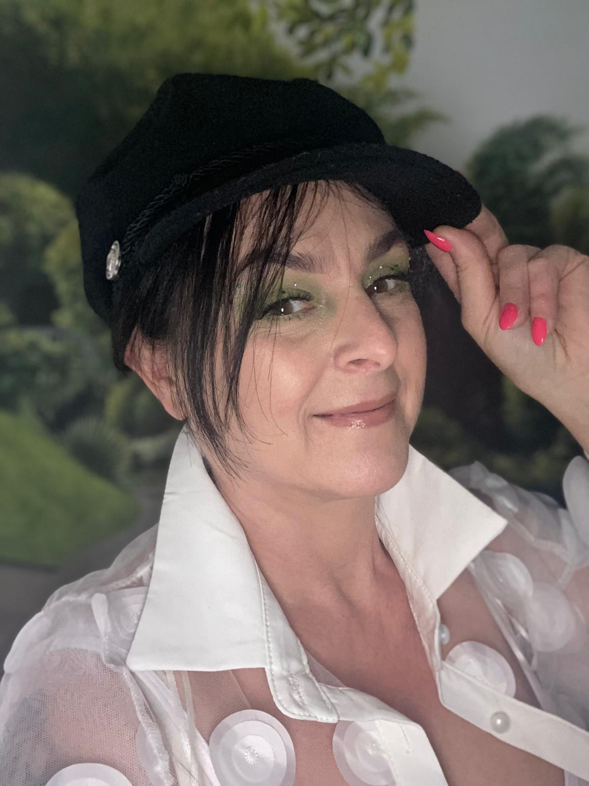

About
Born in Gniezno, Poland, in 1972, Lucyna showed her passion for art early in her school years, taking an active part in art competitions and other artistic activities. Experimenting with the art of producing gold jewellery and hand-painted glass baubles for Christmas trees encouraged Lucyna to explore these areas in more detail. In 2008, she graduated in Design and Advertising for interior design and thus began her career in art.

Having completed her studies, Lucyna spent several years working in art, exploring the secrets of masonry and stone processing. She also learned about painting in oils, watercolours and acrylic, creating drawings and portraits.
Looking for a wider perspective of the world, Lycyna left her homeland in 2015 and embarked on a journey through picturesque Great Britain, where she finally settled, drawing inspiration from the unusual colours of British scenery.
Discovering the corners of the world and Great Britain itself, Lucyna was inspired by diversity. She decided to highlight the benefits of using different painting techniques, which are characterised by deep colour and contrast, as well as the art of shading, thus leaving room for subjective interpretation. The specific uniqueness of Lucyna’s paintings results from the combination of the courage to experiment, based in on imagining the energy flowing from the source and the desire to express emotions through art.
Lucyna, through a variety of techniques, colour enhancement and using the art of shading, creates a specific form of abstraction, expressing her own emotions and interpretation, while opening the space for discussion with the recipient, thus building a bond with the viewer.